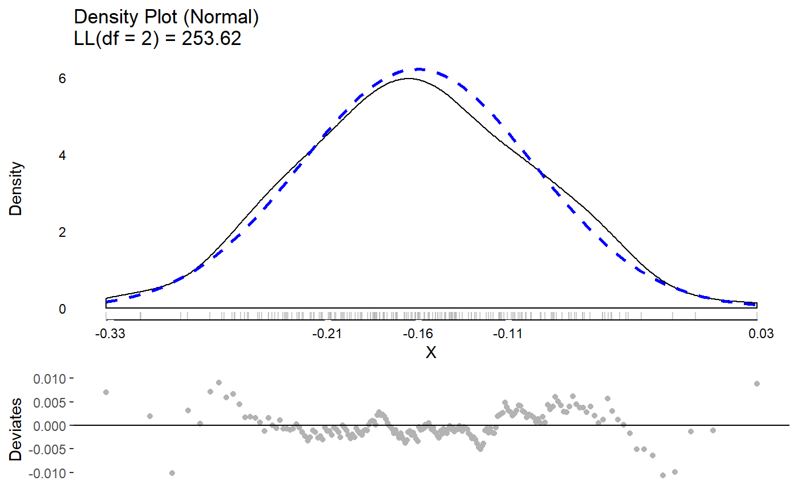
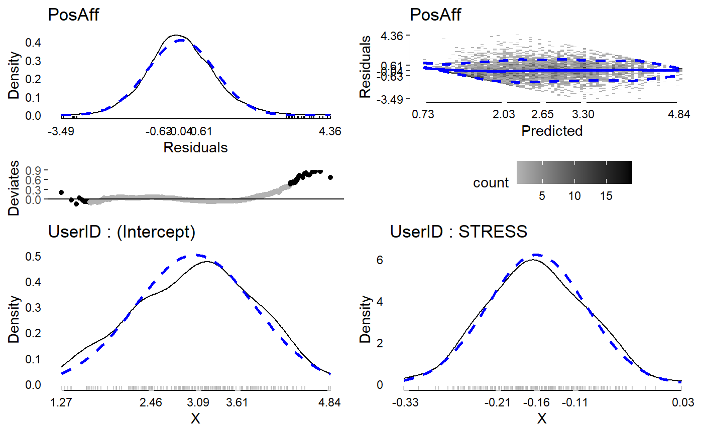
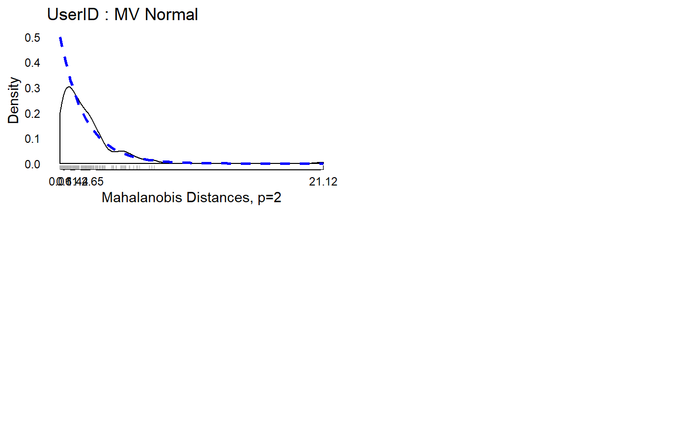

This function creates a number of diagnostic plots from lmer models.
# S3 method for modelDiagnostics.merMod plot(x, y, plot = TRUE, ask = TRUE, ncol = 1, nrow = 1, ...)
Arguments
| x | A fitted model object from |
|---|---|
| y | Included to match the generic. Not used. |
| plot | A logical value whether or not to plot the results or simply return the graaphical objects. |
| ask | A logical whether to ask before changing plots. Only applies to interactive environments. |
| ncol | The number of columns to use for plots. Defaults to 1. |
| nrow | The number of rows to use for plots. Defaults to 1. |
| ... | Included to match the generic. Not used. |
Value
a list including plots of the residuals, residuals versus fitted values, and one list for plots of all random effects
Examples
library(JWileymisc) sleep[1,1] <- NA m <- lme4::lmer(extra ~ group + (1 | ID), data = sleep) md <- modelDiagnostics(m, ev.perc = .1) md$extremeValues#> extra ID Index EffectType #> 1: 0.0 9 9 Residuals #> 2: -0.1 5 15 Residuals #> 3: 4.6 9 19 Residuals #> 4: 3.4 6 6 Random Effect ID : (Intercept) #> 5: 3.7 7 7 Random Effect ID : (Intercept) #> 6: 4.4 6 16 Random Effect ID : (Intercept) #> 7: 5.5 7 17 Random Effect ID : (Intercept)data(aces_daily, package = "JWileymisc") m <- lme4::lmer(PosAff ~ STRESS + (1 + STRESS | UserID), data = aces_daily) md <- modelDiagnostics(m, ev.perc = .001) md$extremeValues#> PosAff UserID Index EffectType #> 1: 2.018930 19 643 Residuals #> 2: 4.647537 22 736 Residuals #> 3: 4.379594 22 737 Residuals #> 4: 4.285682 51 1759 Residuals #> 5: 5.000000 52 1819 Residuals #> 6: 4.593965 53 1838 Residuals #> 7: 5.000000 53 1841 Residuals #> 8: 3.679191 56 1934 Residuals #> 9: 3.499317 69 2371 Residuals #> 10: 1.333848 75 2580 Residuals #> 11: 4.200560 78 2688 Residuals #> 12: 1.000000 81 2805 Residuals #> 13: 1.723817 83 2884 Residuals #> 14: 4.702814 88 3018 Residuals #> 15: 4.982255 97 3328 Residuals #> 16: 4.851732 97 3329 Residuals #> 17: 4.697991 97 3330 Residuals #> 18: 5.000000 107 3675 Residuals #> 19: 1.173068 113 3902 Residuals #> 20: 1.000000 115 3954 Residuals #> 21: 1.041260 119 4100 Residuals #> 22: 4.713139 127 4357 Residuals #> 23: 4.054051 141 4834 Residuals #> 24: 3.975565 141 4835 Residuals #> 25: 3.989508 141 4836 Residuals #> 26: 4.278470 141 4844 Residuals #> 27: 4.447151 147 5079 Residuals #> 28: 1.079654 155 5341 Residuals #> 29: 5.000000 155 5358 Residuals #> 30: 4.660743 160 5520 Residuals #> 31: 1.342503 163 5626 Residuals #> 32: 4.706810 173 5944 Residuals #> 33: 4.194950 180 6212 Residuals #> 34: 4.258350 191 6568 Residuals #> 35: 5.000000 191 6569 Residuals #> 36: 4.701488 123 4219 Multivariate Random Effect UserID #> 37: 3.942647 123 4220 Multivariate Random Effect UserID #> 38: 3.841534 123 4221 Multivariate Random Effect UserID #> 39: 3.072598 123 4222 Multivariate Random Effect UserID #> 40: 4.165724 123 4223 Multivariate Random Effect UserID #> 41: 2.573955 123 4224 Multivariate Random Effect UserID #> 42: 1.871370 123 4225 Multivariate Random Effect UserID #> 43: 4.497994 123 4226 Multivariate Random Effect UserID #> 44: 2.207134 123 4227 Multivariate Random Effect UserID #> 45: 4.370643 123 4228 Multivariate Random Effect UserID #> 46: 1.713198 123 4229 Multivariate Random Effect UserID #> 47: 3.786528 123 4230 Multivariate Random Effect UserID #> 48: 4.702243 123 4231 Multivariate Random Effect UserID #> 49: 2.262491 123 4232 Multivariate Random Effect UserID #> 50: 5.000000 123 4234 Multivariate Random Effect UserID #> 51: 2.392975 123 4235 Multivariate Random Effect UserID #> 52: 3.588502 123 4236 Multivariate Random Effect UserID #> 53: 3.446311 123 4237 Multivariate Random Effect UserID #> 54: 2.832955 123 4238 Multivariate Random Effect UserID #> 55: 3.671293 123 4239 Multivariate Random Effect UserID #> 56: 4.893790 123 4240 Multivariate Random Effect UserID #> 57: 4.633870 123 4242 Multivariate Random Effect UserID #> PosAff UserID Index EffectType